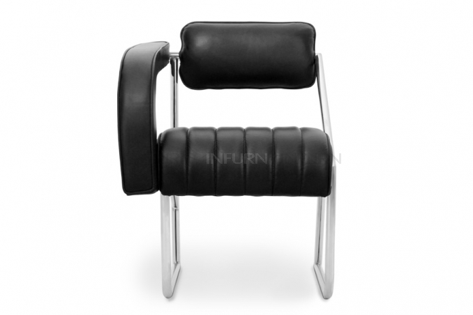
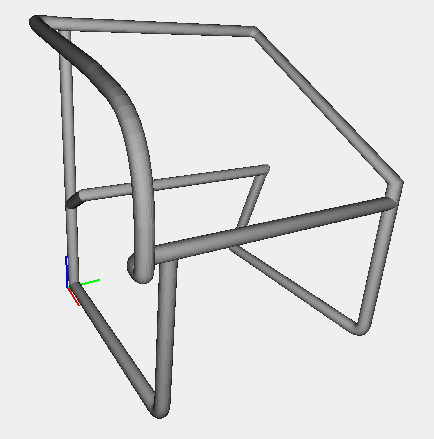
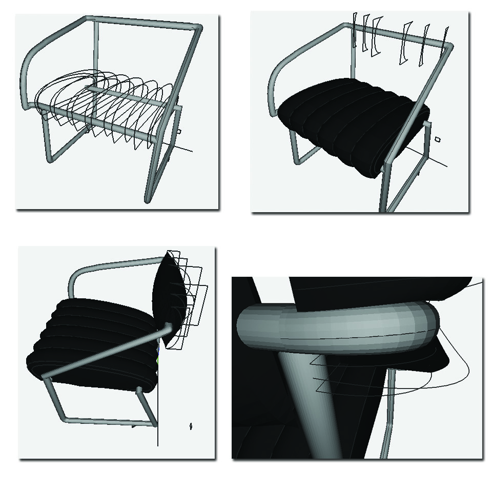
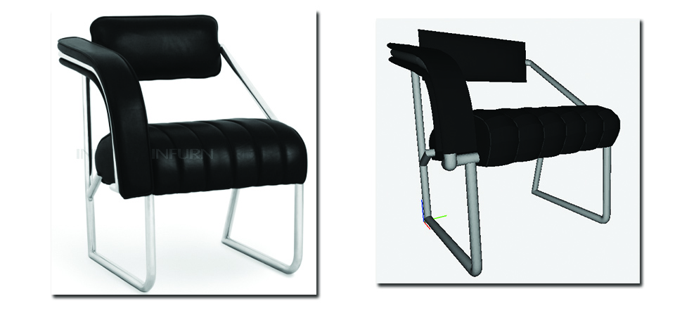
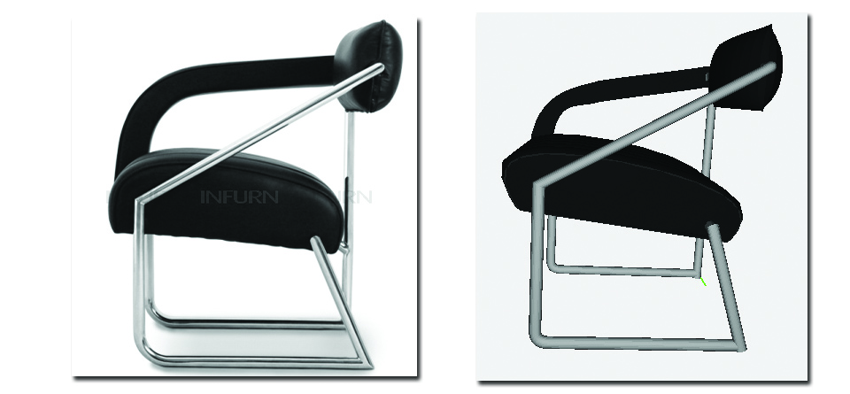

Computational Graphics
FINAL PROJECT
FINAL PROJECT
Lauded as a pioneer of the Modern Movement in architecture and design, Kathleen Eileen Moray Gray was born into an aristocratic family near Enniscorthy, a market town in south-eastern Ireland. An artistic flair was encouraged by her parents at a young age and she was fortunate enough to travel with her father extensively on painting tours of Italy and Switzerland. Gray became intrigued by the Art Nouveau philosophy whilst studying at the Slade School of Fine Art in London. She was a huge fan of the work of Glaswegian Charles Rennie Mackintosh, an influence which is apparent within her pieces. Having spent the majority of her adulthood being influenced by her surroundings in Paris and southern France, Eileen Gray’s designs are considered as modern furniture classics. Vogue magazine and Yves Saint Laurent are noted fans of her work; whilst a piece designed by Gray was recently sold at auction in Paris for 21.9 million euros, setting a record for 20th century decorative art.
Eileen Gray’s Non-Conformist Chair is a highly artistic piece, the shape of which follows the designer’s belief that “to create, one must first question everything”. One armrest was deliberately left to give more ease to the body. The Non-Conformist chair was purpose-built to accommodate Gray’s favourite resting position. The Irish-born designer was known for her extensive experiments, questioning the common rules and principles in design. Her asymmetrical chair is regarded as a piece of art, embodying the spirit of an era marked by great number of inventions and cultural firsts. INFURN produces this design classic with chromed steel frame and fabric, classic leather or premium leather upholstery in a choice of colours.
I started the model of the chair with the build the skeleton. I have used mainly the CUBIC_HERMITE function for the creation of the surfaces (in this case we speak of the tubes), in particular to create a pipe I built two parallel lines on them and I created the tubular surface with the appropriate tangents, but also BEZIER and NUBS the functions:

After, I built the cushions. In this case I used the BEZIER function for the creation of the curves with puffy effect:

here is the finished model:


click here
click here